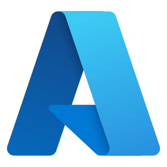
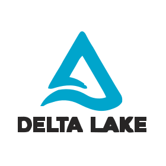
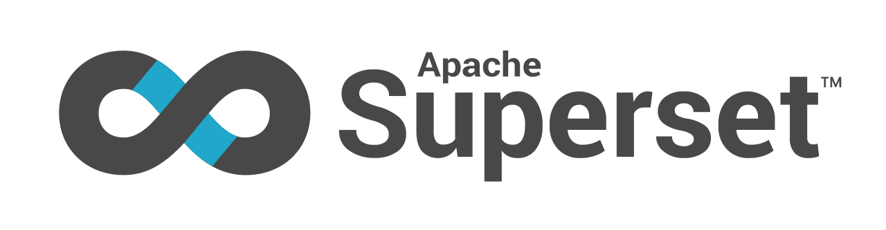
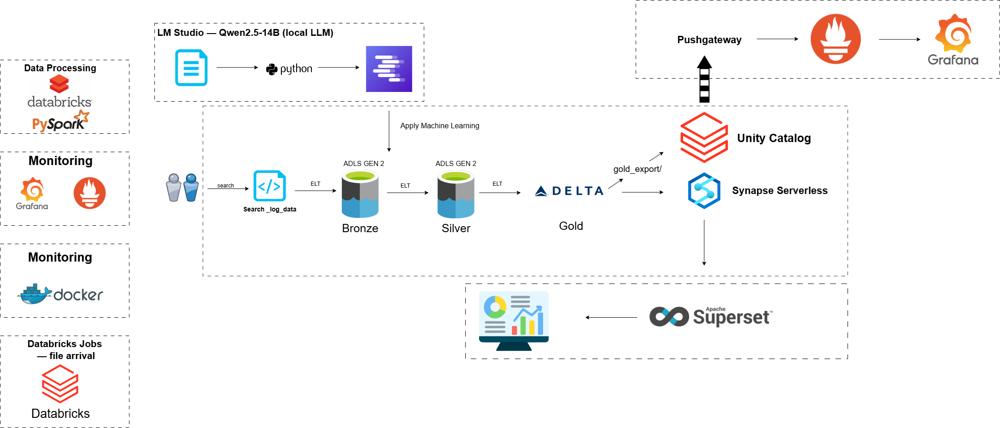
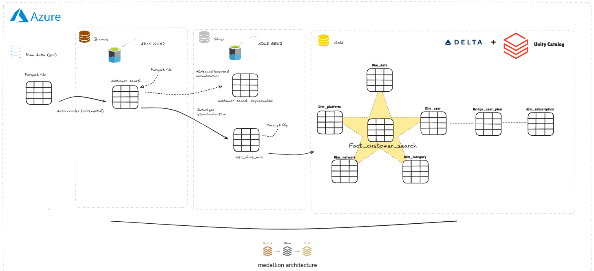
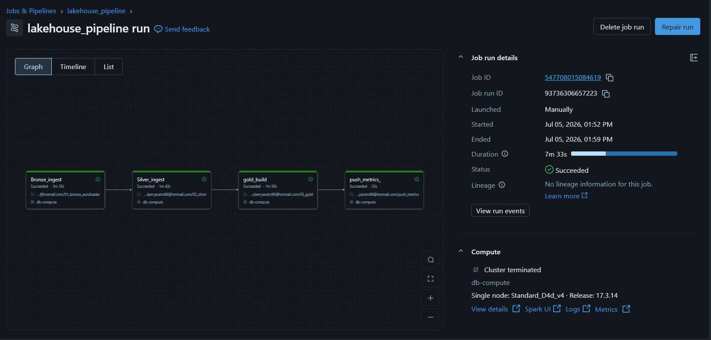
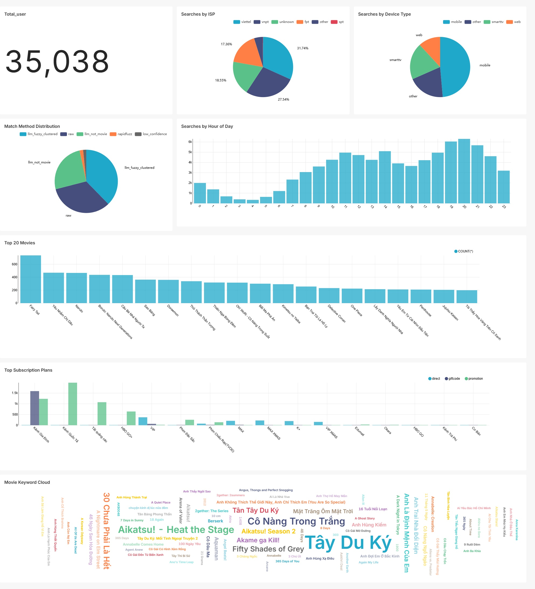
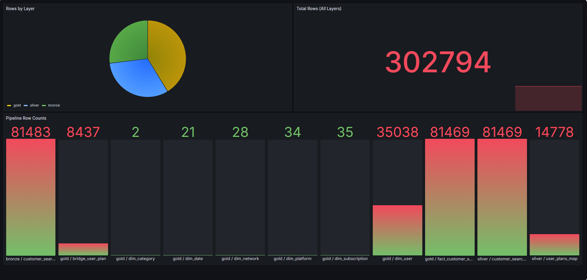

Azure Lakehouse
Data Pipeline
An end-to-end Azure lakehouse turning 81K raw FPT Play OTT search-log records into a star-schema warehouse — with Auto Loader incremental ingestion, ML-based Vietnamese keyword normalization, a Synapse serving layer, Superset dashboards, and Grafana pipeline monitoring.
Tech stack

Azure
Delta Lake
SupersetThe problem
FPT Play produces raw OTT search logs — each event a user_id × keyword × platform × network × subscription record. The keywords are messy: typos, missing Vietnamese diacritics, and noise ("doremon", "nguoi nhen", "one pice"), making it impossible to answer "which titles are actually being searched for?" without cleaning them first.
The goal: port an AWS lakehouse design to Azure, build an incremental Bronze → Silver → Gold pipeline, normalize search keywords to canonical movie titles with ML, and serve analytics through a warehouse and BI dashboards — with pipeline observability on top.

System architecture — Azure cloud pipeline plus the local Docker analytics & monitoring stack.

Detailed medallion flow, ending in the Gold star schema.
Data model
81K search events land as Parquet in ADLS Gen2 and flow through three Delta Lake layers — Bronze, Silver, Gold — governed by Unity Catalog. Gold is exported to a plain ADLS path and served by Synapse Serverless SQL for BI.

The lakehouse_pipeline Databricks Job — four chained notebook tasks, fired on file arrival, all green.
| Table | Rows | Description | Layer |
|---|---|---|---|
bronze.customer_search |
81,483 | Raw search events, Auto Loader incremental append, minimal typing | Bronze |
silver.customer_search_keynormalize |
81,469 | Cleaned dates & fields, keywords normalized to canonical titles via ML MERGE | Silver |
silver.user_plans_map |
14,778 | Exploded userPlansMap array into plan_name / plan_source rows | Silver |
gold.fact_customer_search |
81,469 | Central fact — surrogate keys to 5 dimensions, plus hour_of_day | Gold |
gold.bridge_user_plan |
8,437 | Resolves the many-to-many between users and subscriptions | Gold |
gold_export/ + Synapse views |
— | Plain Delta export queried in place by Synapse OPENROWSET, read by Superset | Serving |
Plus six dimensions — dim_date, dim_platform, dim_category, dim_network, dim_user (SCD Type 1), and dim_subscription — completing the star schema.
What the data actually looks like at each step
Raw → Bronze Ingested as-is; only datetime typed (two locale formats reconciled)
| keyword | platform | networkType | proxy_isp | action |
|---|---|---|---|---|
| doremon | smarttv-sony-android | wifi | fpt | search |
| lưu ly mỹ nhân sát | ios | WIFI | vnpt | search |
| one pice | android | wifi | viettel | search |
Bronze → Silver Keyword normalized to canonical title with a match method & confidence
| keyword | keyword_normalized | _kw_match_score | _kw_match_method |
|---|---|---|---|
| doremon | Doraemon | 1.0 | llm_fuzzy_clustered |
| one pice | One Piece | 0.95 | llm_fuzzy_clustered |
| vượt bguc | Vượt Ngục | 0.89 | rapidfuzz |
Silver → Gold Facts join surrogate keys; dimensions carry descriptive attributes
| eventID | date_key | hour_of_day | platform_key | keyword_normalized |
|---|---|---|---|---|
| 0afcf316… | 20220602 | 17 | 21 | Doraemon |
| e3f53aef… | 20220602 | 14 | 8 | One Piece |
Data-quality challenges encountered
Cast to TIMESTAMP failed — two datetime formats in one column
The source mixed 24-hour strings with Vietnamese-locale 12-hour values carrying SA/CH (AM/PM) suffixes. Fixed by regexp-substituting the suffixes then coalesce(try_to_timestamp(24h), try_to_timestamp(12h)).
Timestamps in year 2565 — Buddhist-Era calendar
108 rows landed 543 years in the future (Thai BE calendar). Corrected with add_months(-543*12) in Silver; 14 truly unparseable rows are dropped and show as the Bronze→Silver delta on the Grafana dashboard.
Vietnamese rendered as "?" in Superset
Hours were spent chasing a pymssql/FreeTDS driver bug. The real cause: Synapse's default CP1252 collation can't hold characters like ầ/ồ/ữ. Fixed with ALTER DATABASE gold_db COLLATE Latin1_General_100_BIN2_UTF8.
ML keyword normalization
The core challenge: map messy search keywords to canonical movie titles. A local LLM classifies high-frequency keywords, then fuzzy matching handles the long tail — all applied to Silver via an idempotent MERGE.
- Pareto scoping — keywords with freq ≥ 2 (7,646 unique) cover ~72% of traffic; the 21K freq=1 long-tail is handled with cheap fuzzy matching instead of the LLM
- Local LLM — Qwen2.5-14B via LM Studio (JSON-schema output, 4 worker threads) labels each keyword: movie or not, canonical title, confidence
- Confidence calibration — a hand-reviewed sample showed the model is not well-calibrated (weighted fit R²=0.405); accuracy at conf 0.85 was 17.4% vs 65.3% at ≥0.95, so only ≥0.95 mappings are trusted
- Fuzzy clustering — rapidfuzz (threshold 92, sequel-protection rules) merges near-duplicate titles: 3,173 → 3,006
| Match method | Rows | Meaning |
|---|---|---|
| llm_fuzzy_clustered | 30,703 | LLM-confirmed movie, conf ≥ 0.95, clustered |
| rapidfuzz | ~1,445 | Long-tail fuzzy-matched to a confirmed title |
| llm_not_movie | 20,867 | Not a movie title — channels, apps, noise |
| low_confidence | 1,292 | Suspected movie, conf < 0.95 — kept raw |
| raw | 27,162 | Remaining long-tail, left as-is (demo scope) |
Raw LLM accuracy was only 40.4% — the honest number is what drove the strict 0.95 threshold instead of blindly trusting model confidence.
Approach
Five notebooks move data one layer at a time, wired into a Databricks Job that fires on file arrival. Transforms run in PySpark; Unity Catalog governs access; Auto Loader handles incremental ingestion.
Step 1 — Incremental ingest (Auto Loader)
Bronze uses cloudFiles with trigger(availableNow=True). A checkpoint tracks which files were processed, so only new files are read and re-running the notebook never duplicates rows — batch economics with streaming plumbing.
- Exactly-once — the checkpoint guarantees each file is ingested once, no manual offset tracking
- No small-files problem — Spark controls output file sizes rather than hand-chunking rows into tiny Parquet files
- Event-driven — a Databricks Job with a file-arrival trigger runs the whole chain when a new batch lands
Step 2 — Transform, normalize & model
Silver fixes calendars/locales, lowercases fields, and applies the ML mapping via MERGE. Gold builds a star schema: a central fact plus six dimensions and a bridge table for the user↔subscription many-to-many.
| Relationship | How it's modeled |
|---|---|
| fact → 5 dims | date / platform / category / network / user joined by surrogate keys |
| user ↔ subscription | many-to-many resolved through bridge_user_plan (not joined straight to the fact) |
| dim_user | SCD Type 1 — dataset spans 3 days; Type 2 is the documented evolution path |
Where Unity Catalog & Synapse fit in
Unity Catalog is not on the data path. Delta files live on ADLS Gen2; Unity Catalog is the governance layer that tracks each table's location, schema, and access via a Managed Identity. Synapse Serverless holds no data either — it queries the exported Delta files in place through OPENROWSET, billed per TB scanned, keeping BI queries off the pipeline's compute.
📚 ADLS is the bookshelf holding the actual files; Unity Catalog is the card catalog; Synapse is a reading desk that opens the books in place without copying them.
Key techniques used
readStream.format("cloudFiles")
Auto Loader with availableNow trigger — incremental, exactly-once file ingestion that terminates like a batch job.
MERGE INTO ... WHEN MATCHED
Idempotent application of the ML keyword mapping keyed on keyword + method='raw', safe to re-run.
rapidfuzz UDF + diacritic strip
Long-tail matching with Vietnamese diacritic normalization and a min-length ≥ 6 guard to stop short keywords matching nonsense.
OPENROWSET(FORMAT='DELTA')
Synapse Serverless views read the exported Delta tables in place — no data copy, pay-per-scan serving.
Pushgateway ← ngrok ← Databricks
Row-count metrics pushed from the cloud through a tunnel to a local Prometheus, visualized in Grafana as pipeline observability.
Dashboards & monitoring
A Superset dashboard for analytics, connected to Synapse, plus a Grafana dashboard for pipeline observability fed from Databricks.
| Tool | Focus | Key visuals |
|---|---|---|
| Superset | OTT search analytics | Top 20 movies · searches by hour (prime-time peak 20–21h) · match-method pie · device type · ISP · subscription plans · movie keyword cloud |
| Grafana | Pipeline observability | Per-table row counts by layer · total 302,794 rows · the 14-row Bronze→Silver drop visible at a glance |
Screenshots


Superset analytics (top) and Grafana pipeline monitoring (bottom).
Results
What I'd do differently
Process the full long-tail — the demo ran rapidfuzz on 4K of the 27K remaining raw keywords; a complete pass would push normalization coverage well past 72%.
Add a dim_movie dimension instead of keeping the normalized title as a degenerate attribute on the fact — cleaner for title-level slicing and future enrichment (genre, release year).
Replace the ngrok tunnel with a Pushgateway on Azure Container Instances inside the same VNet — the honest production answer to "how does a cloud job reach a home PC behind CGNAT."
- SCD Type 2 on dim_user — once multi-week history exists, track profile changes over time instead of overwriting
- Data-quality gates — Delta constraints between layers with Grafana alerting when row counts drift unexpectedly
- CI/CD for notebooks — Databricks Asset Bundles; Terraform IaC is demonstrated in my separate CI/CD project